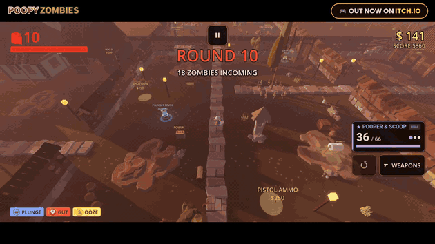
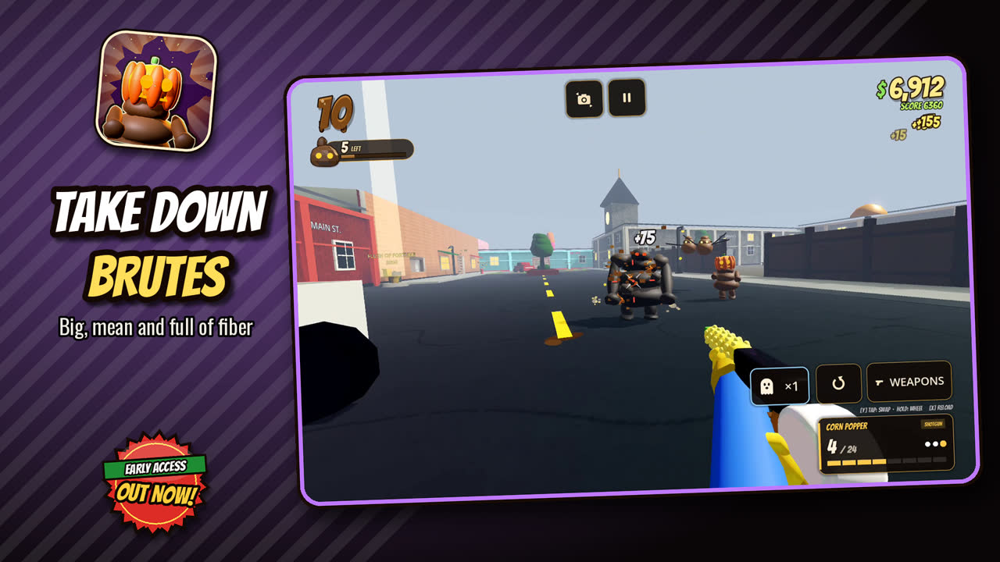
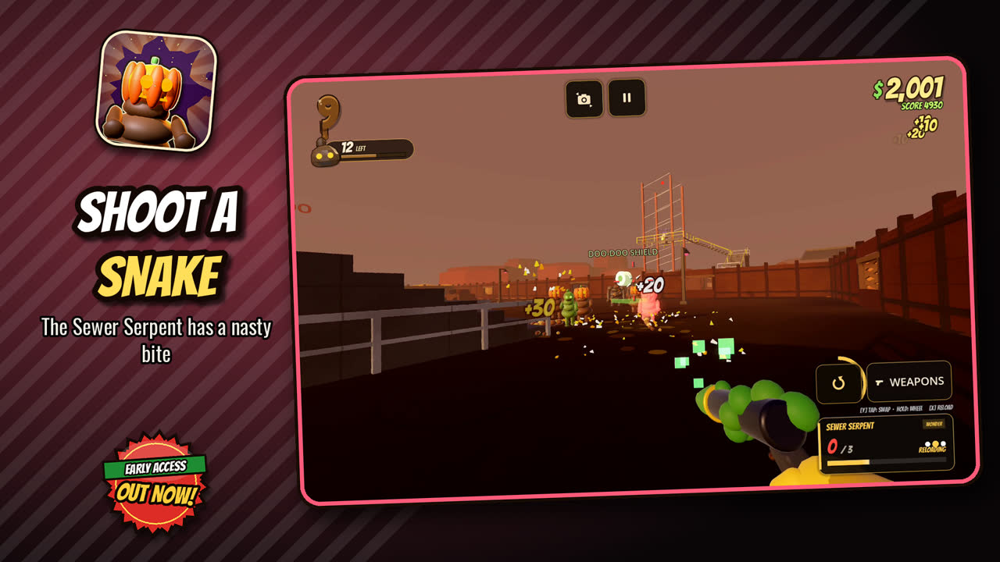
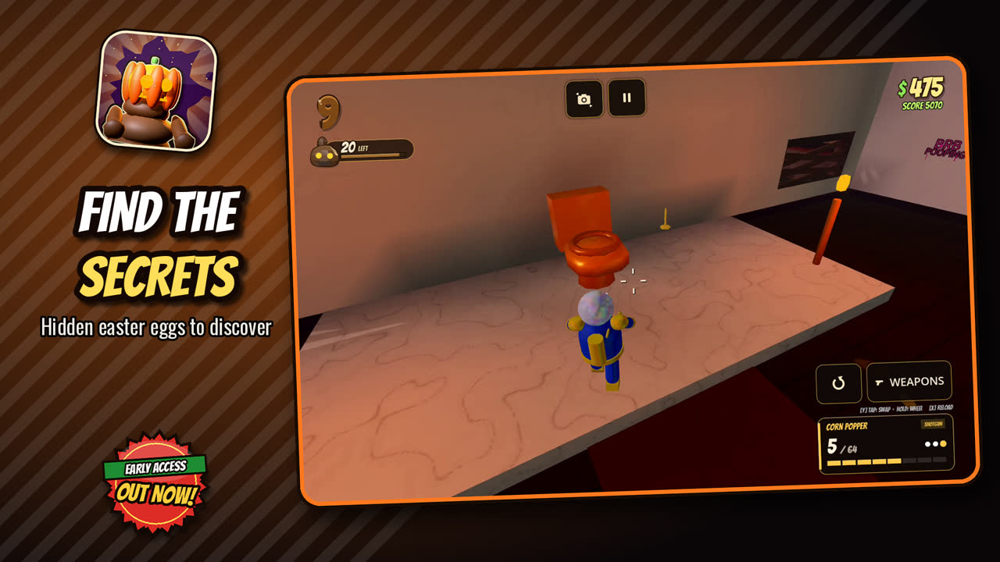
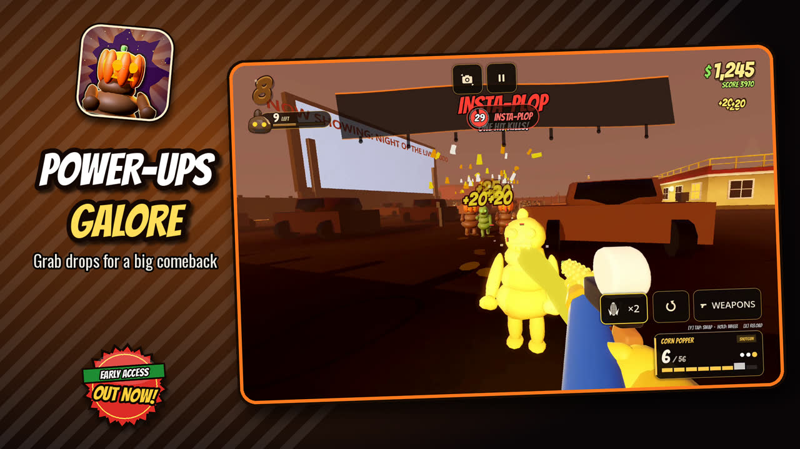
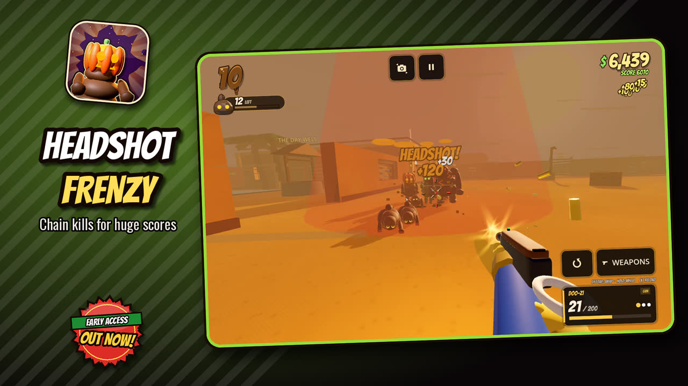
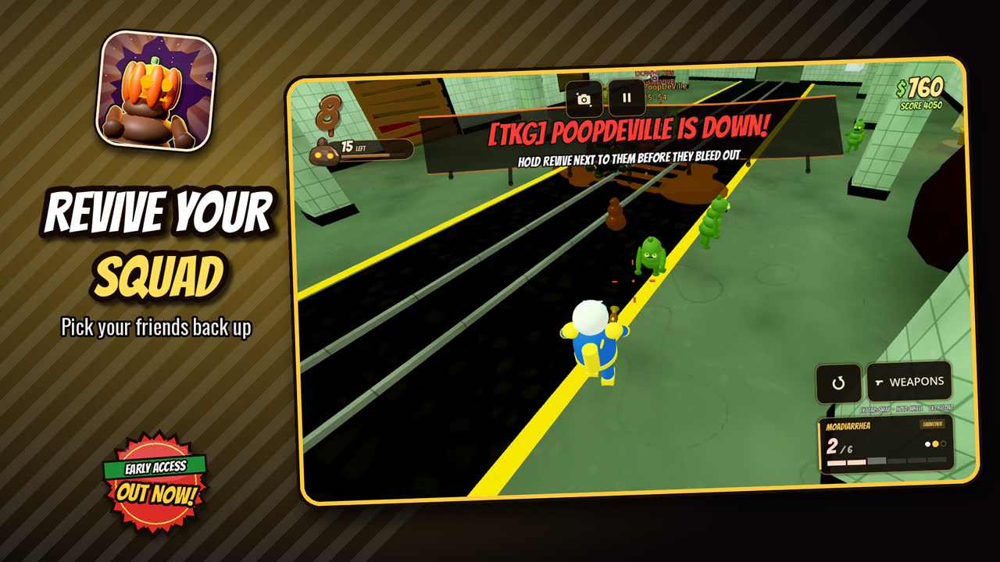
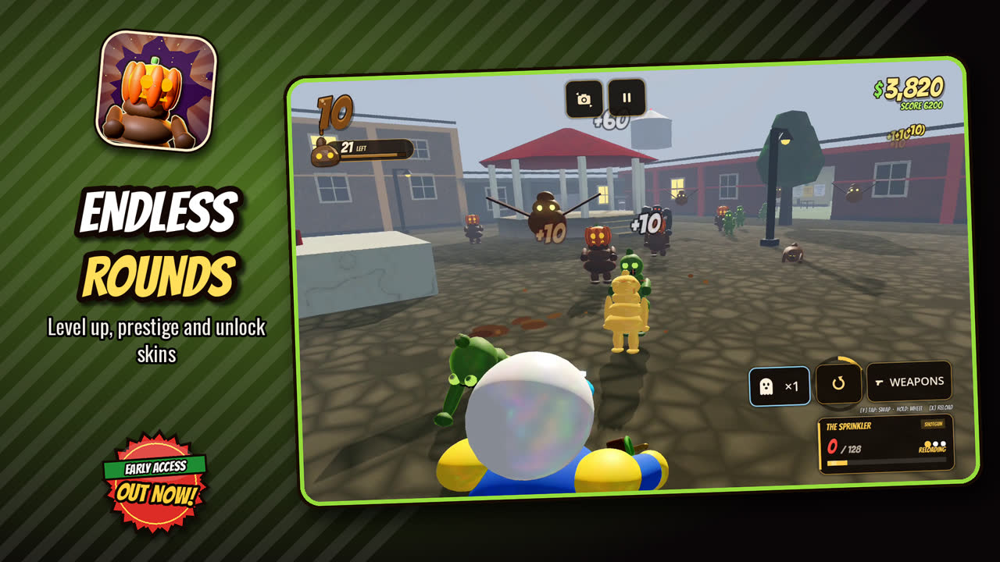
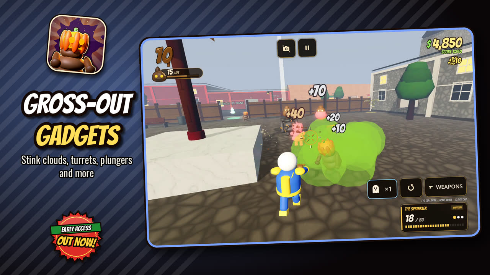

Poopy Zombies
Version 4.0.8 · Rated Mature 17+ (ESRB: Crude Humor) · Android
Poopy Zombies is a hilarious top-down zombie survival shooter. Fight endless waves of poop zombies, unlock new maps, battle giant bosses and team up with friends in couch co-op or Wi-Fi multiplayer. Play offline, anytime.

Screenshots








Features
Round-based zombie survival
Every round brings more zombies, faster and tougher. Earn points for every hit, buy guns off the walls, open doors to new areas, drink perks and upgrade your favorite gun at the Pack-a-Turd. How many waves can you survive?
Play with friends
- Couch co-op: 2 players on one screen with controllers
- Wi-Fi multiplayer: up to 4 players on the same Wi-Fi, no internet needed
- Revive downed teammates, no friendly fire
- Solo play works fully offline
Boss fights
Every 10th round a giant boss rises: The Big Brown One, The Septic King, Thee Crusty Skidmark and The Colon-El. Beat them all to unlock a secret map.
6 maps + endless mode
Town, Sewer Subway, Dookie Desert, Stairway to Heaven, the secret Bowel Movement, and The Throne Room endless arena. Every map hides easter eggs to discover.
18+ weapons
Shotguns, SMGs, rifles, rocket launchers, zappers and wild wonder weapons like the Flushinator and the Pearly Plunger.
Silly skins & death effects
Unlock funny skins like Disco Doo and The Throne King, plus death effects like Party Pooper, Fart Rocket and Golden Nugget. Collect 24 TP Sheet power-ups.
Daily rewards & achievements
Log in for a daily streak bonus, beat the daily challenge and unlock 27 achievements.
Seasonal events
Limited-time events like the Halloween update with pumpkin zombies, the MiniJack gun and spooky death effects.
Play your way
Touch controls, controller support and keyboard + mouse. Color-blind modes, adjustable HUD size and graphics settings for older phones.
A funny arcade zombie shooter, made by one indie developer: Tyler Kenny Games.
6 maps, 4 bosses

Platforms: Windows and Android (7.0+)
Controls: touch, controller, or keyboard and mouse
Modes: solo, couch co-op, Wi-Fi LAN up to 4 players
Price: free, name your own price
Status: Released
Free on itch.io · Windows & Android · Android package: com.poopyzombies.game